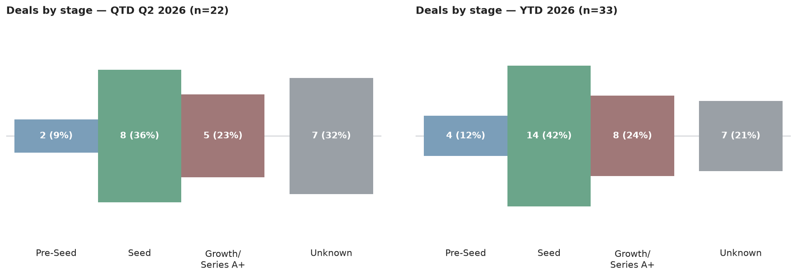
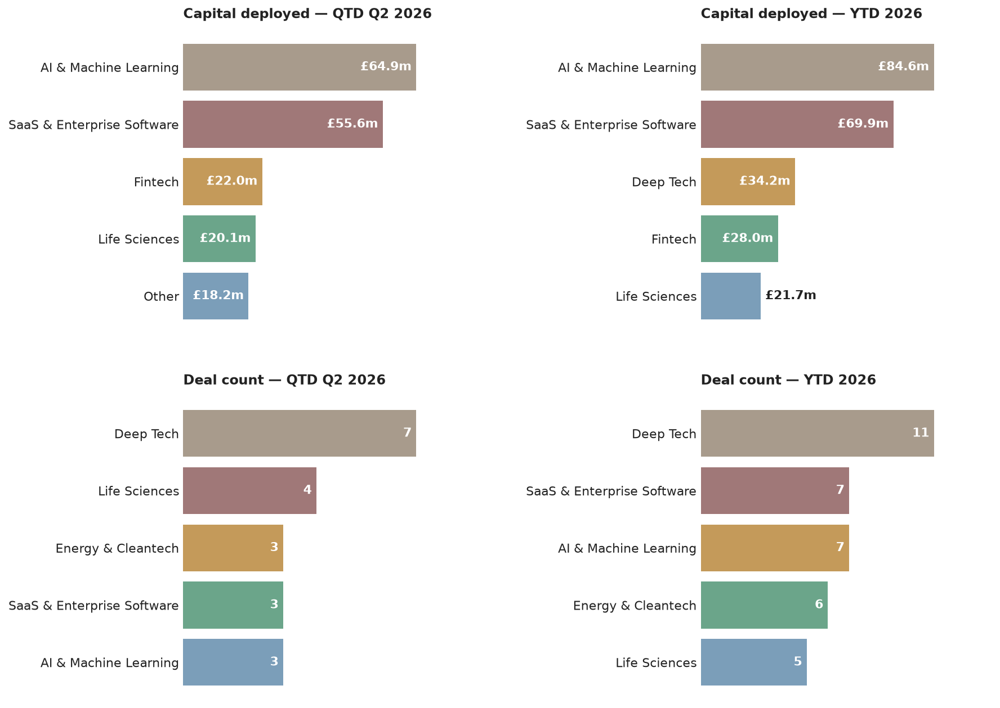

A weekly intelligence briefing monitoring public news coverage for venture capital investment activity in Scottish startups and scaleups — tracking who's investing, at what stages, in which sectors, and with what cadence.
This is an automated newsletter, written by Claude, based on news coverage scraped from 46 websites.
Here are the deals we saw reported in the press this week, ordered by the announcement date.
Source: Crunchbase, Startup Mag
Source: Bdaily, DIGIT.fyi, PXN Ventures
Source: Edinburgh Innovations, Scottish Financial Review, Crunchbase, DIGIT.fyi, PXN Ventures
Source: BusinessCloud, STAC
Source: BusinessCloud, STAC
Q3 2026 has just begun, and no deals have yet been announced with a third-quarter date — so the quarter stands at 0 deals worth £0m for now. Zooming out, the year to date stands at 33 deals worth £171.32m, up one deal and around £13.4m since the last issue — driven by this week's new rounds for BR-DGE and VASO Global, plus the earlier-dated deals for Aveni, Vuabl and Airspection that came to light this week.


There's no quarter-to-date investor activity yet to rank, this early in Q3. Looking at the year so far, Seed remains the dominant stage (14 of 33 deals), with Growth (5) and Pre-Seed (4) also featuring. Four rounds carry no stated stage, one — Aveni's £12m raise — was explicitly not disclosed by its source, and two — Vuabl and Airspection — fall under STAC's second-round cohort investment, while Series A and Series B stay rare at 2 and 1 respectively. Deep Tech leads the sector mix with 11 deals, just ahead of SaaS & Enterprise Software (7) and AI & Machine Learning (7), with Energy & Cleantech, Life Sciences and Healthtech (5-6 each) rounding out a broad, deeptech-and-energy-led year for Scottish venture activity.
Lead investor: PXN Ventures · Co-investors: Puma Growth Partners, Lloyds Banking Group, Nationwide, Scottish Enterprise Investment Fund · Sector: AI & Machine Learning, Fintech · Location: Edinburgh
Aveni builds AI tools for wealth managers and banks, including a Unified Assurance Platform that reviews conduct and compliance risk in customer interactions. The £12m round was led by PXN Ventures, with continued backing from Puma Growth Partners, Lloyds Banking Group, Nationwide and Scottish Enterprise; none of the coverage states what stage the round was. The funding will go toward new products that assess the conduct risk of AI agents operating in financial services — a niche created by banks' own growing use of AI.
Source: Edinburgh Innovations
Lead investor: Bettor Capital · Co-investors: Greyfriars · Sector: Fintech · Location: Edinburgh
BR-DGE runs a payments orchestration platform for enterprise merchants in gaming and online retail, and will use the funding for international expansion and platform development. The round brought in Bettor Capital, a US gaming-focused specialist investor, as a new backer — its first Scottish deal — alongside continued support from long-time advisor Greyfriars. The raise coincided with the appointment of Perry Blacher as chairman.
Source: Startup Mag
A few of the deals above were actually announced weeks or months before they turned up in our search this week — Vuabl and Airspection's STAC Invest cheques date back to April, and Aveni's £12m raise to early June. That's a reflection of when these deals came to light rather than any lull in Scottish dealmaking — see The Numbers above for the current run-rate.